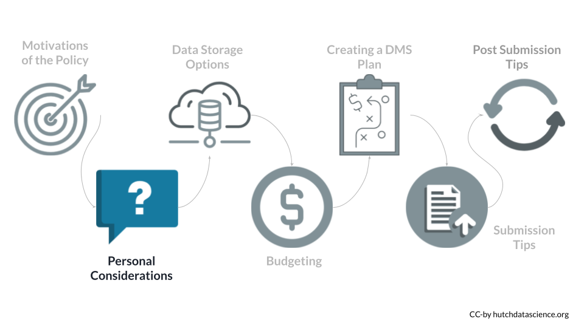
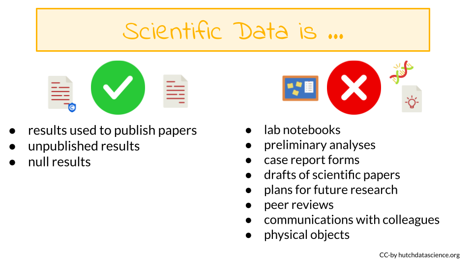
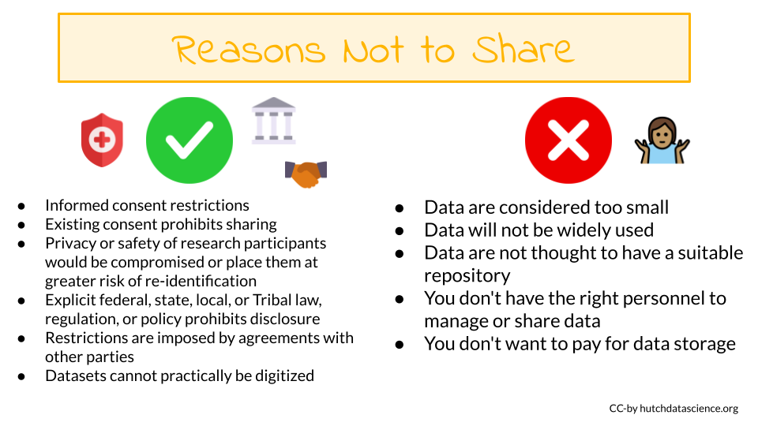

How Will This Policy Affect Me
You can refer to the NIH overview of which research will be covered by this new policy.

The major requirement of the policy is that all grant proposals (submitted after January 25th, 2023) for mechanisms that require compliance, must include a plan for how they will manage and share their data.
For certain grant mechanisms for projects that do not generate data, you will not need to submit a DMS plan. For certain types of data, sharing is not possible, and a justification will be required instead.
The following text will discuss several key questions:
To determine if your research requires compliance with other policies that may influence how you share your data, take this quiz.
In addition to these questions, there are ethical considerations that you may want to think about. See the ethics section of the appendix for more information.
Grant Mechanisms
What grant mechanisms require compliance with the DMS policy?
The DMS Policy applies to all research that generates scientific data (regardless of the funding level), including:
- Research Projects
- Some Career Development Awards (K)
- Small Business SBIR/STTR
- Research Centers
The DMS Policy does not apply to research and other activities that do not generate scientific data, including:
- Training (T)
- Fellowships (F)
- Construction (C06)
- Conference Grants (R13)
- Resource (G)
- Research-Related Infrastructure Programs (e.g., S06)
You can look up your NIH Activity Code here to see if you are required to submit a DMS Plan.
For example, I am interested in applying to a R03 award.

According to the table, a DMS Plan is required for this particular award.

Data-generating Research
Does my research generate scientific data?
The NIH Data Management and Sharing (DMS) Policy applies to all NIH-supported research generating scientific data. But what is “scientific data”?

Scientific data
Scientific data are the “recorded factual material of sufficient quality to validate and replicate research findings, regardless of whether the data are used to support scholarly publications”. This can include any of the following if they are applicable to your study:
- unpublished results
- null results
- results used to publish papers
Not Scientific Data
You are not expected to share:
- lab notebooks
- preliminary analyses
- case report forms
- drafts of scientific papers
- plans for future research
- peer reviews
- communications with colleagues
- physical objects (such as biospecimens)
Grant Renewals
Do grant renewals need to comply with the policy?
If you submit a grant renewal application for any of the grants mechanisms that require compliance after January 25th, 2023, then your renewal will need to include a DMS Plan even if the grant was originally funded before January 25th, 2023.
Impact on Reviews
How will this influence the grant review process?
For most proposals – those where data sharing is not part of the Funding Opportunity Announcement – the following will happen during the review process:
- Reviewers will not have access to your DMS plan.
- Reviewers will however see your budget which will include some descriptions of how money will be spent to manage and share data.
- Thus, the DMS plan should not influence your grant score.
- After a grant receives a fundable score, a Program Officer will review the DMS plan and will work with the PI to address any concerns. Changes based on this process can be made during the Just-in-Time procedures.
For proposals where data sharing is specified as part of the Funding Opportunity Announcement the following will happen during the review process:
- The reviewers will have access to the plan and it may be part of the review criteria.
- Program staff will also review the DMS plan.
Sharing Timeline
When does the data need to be shared by?
Data should be made available no later than publication or end of the award. This means that data underlying findings that are not published in peer-reviewed journals should be made available by the end of the award.
No-cost Extensions
Scientific data should be made accessible as soon as possible, and no later than the time of an associated publication or the end of the performance period of the extramural award that generated the data. If a no cost extension is granted for an extramural award, scientific data should be made accessible no later than the time of an associated publication, or the end of the no cost extension, whichever comes first.
When to Not Share Data
Is it possible to not share data?
There are legitimate reasons you might not share your data. Data might not be shareable due to ethical, legal, or technical concerns. You will still need to submit a DMS Plan even if you plan to withhold data sharing. You must explain your reasoning in your DMS Plan.

Justifiable ethical, legal, and technical factors for limiting sharing of data include:
Informed consent will not permit or will limit the scope or extent of sharing and future research use
Existing consent (e.g., for previously collected biospecimens) prohibits sharing or limits the scope or extent of sharing and future research use
Privacy or safety of research participants would be compromised or place them at greater risk of re-identification or suffering harm, and protective measures such as de-identification and Certificates of Confidentiality would be insufficient. At Fred Hutch, you should get in contact with the Institutional Review Office if you have questions about compliance of your research.
Explicit federal, state, local, or Tribal law, regulation, or policy prohibits disclosure
Restrictions are imposed by existing or anticipated agreements with other parties
Datasets cannot practically be digitized with reasonable efforts
For additional information about potential ethical considerations, including if data is of sufficient quality to be shared, see the ethics section of the appendix.
What if my data are proprietary? (click for more information)
Considerations for Proprietary Data (directly from the NIH)
NIH understands that some scientific data generated with NIH funds may be proprietary. Under the Small Business Innovation Research (SBIR) and Small Business Technology Transfer (STTR) Program Policy Directive, effective May 2, 2019, SBIR and STTR awardees may withhold applicable data for 20 years after the award date, as stipulated in the specific SBIR/STTR funding agreement and consistent with achieving program goals. SBIR and STTR awardees are expected to submit a Data Management & Sharing Plan per DMS Policy requirements.
Issues related to proprietary data also can arise when co-funding is provided by the private sector (for example, the pharmaceutical or biotechnology industries). NIH recognizes that the extent of data sharing may be limited by restrictions imposed by licensing limitations attached to materials needed to conduct the research. Applicants should discuss projects with proposed collaborators early to avoid agreements that prohibit or unnecessarily restrict data sharing. NIH staff will evaluate the justifications of investigators who believe that they are unable to share data.
For questions or concerns about data sharing expectations for proprietary data, please contact the Office of Science Policy. Small businesses may wish to contact the NIH SEED Office.
Some additional reasons to limit sharing:
- NIH respects Tribal sovereignty and supports responsible management/sharing of American Indian / Alaska Native participant data, which can include limiting sharing
- SBIR/STTR Program Policy Directive permits withholding data for 20 years, as stipulated in agreements and consistent with program goals
The following are NOT good reasons to limit the sharing of your data:
- Data are considered too small
- Researchers anticipate data will not be widely used
- Data are not thought to have a suitable repository
- You don’t have the right personnel to manage data or share data
- You don’t want to pay for data storage